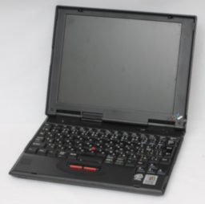
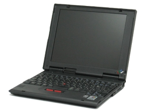
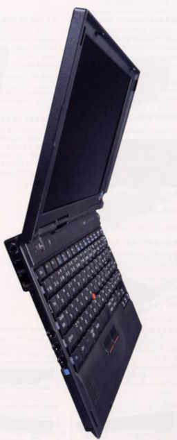
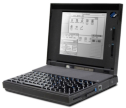

The ThinkPad line was introduced in 1992 by IBM. The ThinkPad line is a buisness class laptop (and later, tablet) line. They are famed for their durability and for many years, were the only computers certified for usage on the International Space Station.
| Photo | Machine | Year Of Introduction | CPU | RAM | Hard Drive | Modem/Networking | Cache | Sound Card | GPU | Bundled Operating System | Bundled Software | Notes |
|---|---|---|---|---|---|---|---|---|---|---|---|---|
|  | 240 | 1999 | Intel Mobile Celeron (300, 366 or 400MHZ) | 64MB Stock (192MB Max) | 6.4GB (300MHz or 366MHZ) 12.0GB (400MHz) |
Unknown | 128KB (Unknown if L1 or L2) | ESS 1946 Sound Chip | NeoMagic MagicMedia128XD (NM2160C) | Microsoft Windows 98 First Edition Windows 95 (Via recovery CD) |
|
|
|  | 240Z | 1997 | Intel Pentium II 300PE MHz | 64MB Stock (192MB Max) | 6.4GB | Unknown/None | 32KB L1 256KB L2 |
Unknown | Unknown | Microsoft Windows 98 Second Edition Microsoft Windows 95 (Via downgrade bundled with 98) Microsoft Windows 2000 Professional Microsoft Windows NT 4.0 Workstation (Via downgrade bundled with 2000) |
Windows 98 Preload
Windows 2000 Preload
|
|
|  | 240Z | 2002 | Intel Pentium III 600MHz | 128MB stock (384MB Max) | 20GB | Unknown/None | 32KB L1 256KB L2 |
Unknown | Unknown | Microsoft Windows NT (CF-28MCFAZCx, Likely NT 4.0) Microsoft Windows 2000 Professional (CF-28MCFAZDx) Microsoft Windows 98 Second Edition (CF-28MCFAZEx) Microsoft Windows XP Professional (Likely around 2003 or so)
|
Panasonic Setup Utility Panasonic DMI Viewer Panasonic Hand Writing |
|
|  | 300 | 1992 | Intel 30386SL (Written as 386 SL), 25MHz | 4MB stock (12MB Max) | 80MB OR 120MB |
Unknown/None | 64 KB (Unknown type) |
Unknown | Western Digital WD90C24 (1MB) | Microsoft DOS 5.0 & IBM OS/2 2.0 OR Microsoft DOS 5.0 & Microsoft Windows 3.1 (Around 1992?) |